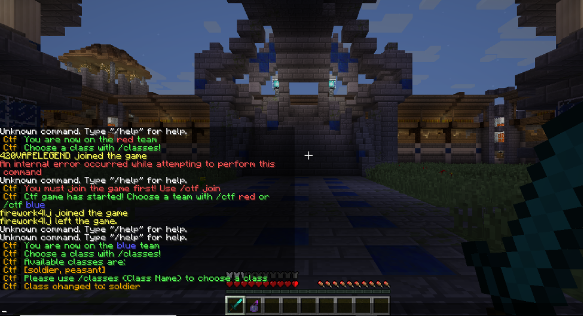
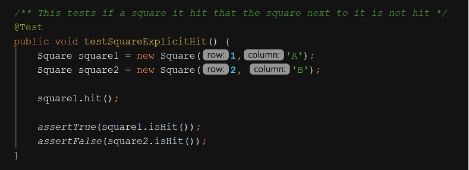
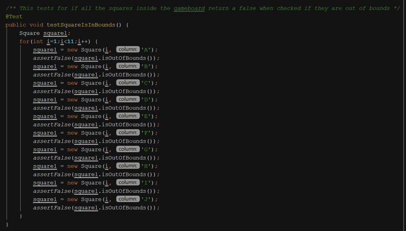
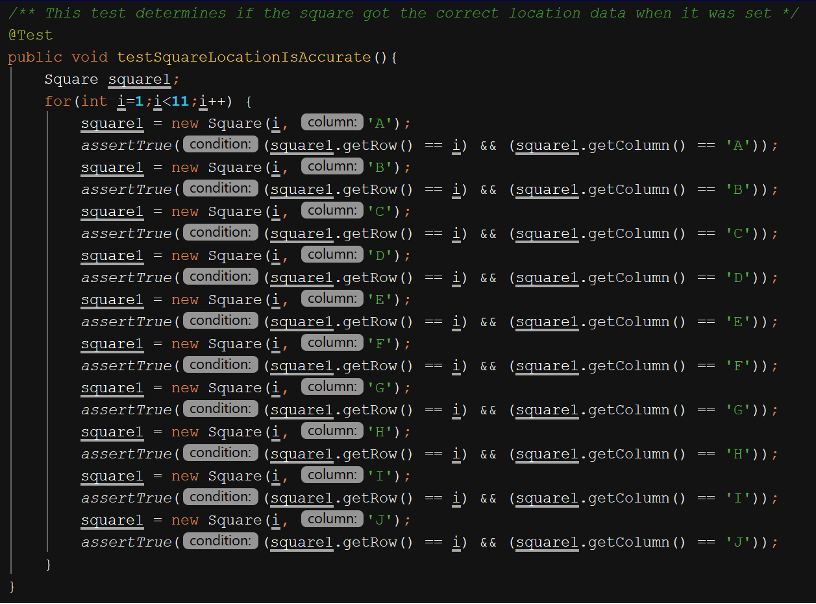

Capture The Flag
Uses: Java, IntelliJ
The Goal of this project was to learn:
- Version Control
- Usability Testing
- The STLC
- Manual testing, Unit testing
- Automated and Mutant Testing
- Software Maintenance
- Software Inspections/Reviews
- Integration and Regression Testing
- Debugging
- Causality and localization
After this project I was able to:
- Apply automated tools such as make and Git in a realistic setting
- Describe the cost-benefit trade-offs inherent in the use of automated tools for building software and configuration management
- Describe several techniques for validating and measuring the quality of software
- Apply testing techniques, including blackbox and whitebox techniques, automatic testing activities, and regression testing Use appropriate techniques and tools, including a debugger, to locate program faults
- Describe several types of maintenance processes associated with correcting and enhancing software systems
- Participate effectively in a software inspection
- Participate effectively in a team environment
Project

The project is a mod for the PC version of Minecraft. The mod is a “Capture the flag” game mode for Minecraft, where admins are able to set up classes, which allow the players to start with a predetermined load out upon spawning that persist even after death, player spawn points for red and blue teams , and flag spawn points for both teams. The mod is intended for people who want to set up their own Minecraft server and want to experience the classic capture the flag experience in Minecraft. Ideally, the mod would be downloaded and set up by people who have experience setting up Minecraft servers as the mod doesn’t walk you through the process of hosting a server, but that can be learned easily online.
Manual Capability Testing
The manual unit test is done via a Minecraft client connected to a Bukkit server running the CTF plugin. We had two people logged into the server so that we could test the multiplayer mechanics of the plugin.
We discovered several bugs throughout out testing:
Some are minor, while others are major. The bug where a player can drop the flag out of their inventory and potentially destroy it by dropping it into fire or lava must be fixed. This can be remedied by disabling the players in the game from dropping items. This is already done in the code on GitHub, however, it appears to not be working as intended in the game. Similarly, the bug where the flag disappears if it happens to be in the player’s inventory when they change classes needs to be fixed, as it is something that is likely to happen with enough players. When either of these bugs occurs, the mod effectively breaks, sometimes choosing to do either no flag or in one instance we tried but were unable to replicate, there ended up being two flags to a team.
We also recommend implementing a way for the players to kill their players. If they get stuck in some locations, there isn't a way of getting unstuck. This is partially the map makers' responsibility, but an option to respawn at your base would be useful.
There are several recommendations for the multi-arena setup. Multi-arena barely works. The flags don't spawn, and the players don't always get teleported to the right location.
As far as the quality of life recommendations, some fun features to implement would be to allow for more than just 2 teams, red and blue.
Ideally, the admin could implement as many teams as there are colors for the blocks of wool (which represent the flags).
Code Review
For this review, we split up the code into manageable ~200-250 line amounts and assigned everyone in the team a section to do. Luckily, most of the files were sitting around 200 to 250 lines, so we could assign individual files to most of the people in our group. As for some of the smaller files, we only chose to review files that are necessary for the program to run well, and that had errors that popped up during our bug testing.
After the review, We went over the code and look at it closely to find code smells as well as faults in the code, and report about the problem we have identified and a fix we can implement to resolve the fault or code smell.
Classes that reviewed: commandsMain.java, main.java, playerRespawn.java, PlayerAttack.java, playerPickupItem.java, classes.java, vote.java, playerInteraction.java
For commandMain.java;
We discovered several code smells and a couple of code faults.
We decided that this function should be split up into multiple smaller functions to improve readability and functionality.
The file also did not contain many comments which would also help improve readability.
We also found incomplete functions that still needed to be finished, leftover code from testing the plugin, and poor handling of player food and health values leading to the game creating a cheat for Minecraft.
In PlayerRespawn.java, there were a few instances of code smells, but no faults. In code there were, needless else statements that contained no code. Couple of variable names that could use more descriptive names. And there were, duplicate code where a few lines of code were repeated changing nothing but the color of the team. Also, the entire file was inside one greater function and finally there was a lack of comments to help the reader/developer figure out what is going on in the file.
In Main.java and PlayerAttack.java there is nothing that stood out enough to warrant changing the code, as they are well-documented enough to understand, and short enough that changing things would likely make the file harder to read or more convoluted.
In playerPickupItem.java the biggest code smell is that the code contains a lot of long methods. We improved by splitting up the code in multiple functions. Which improved the readability and now it is easier to work with in the future.
The second smell is that there is a lot of duplicate code. There were multiple if-else statements that use the same code.
The code can also use some more error handling because not all issues are addressed. A small issue is that the code contained dead code, which we fixed easily by deleting the lines.
In Classes.java and PlayerInteractions.java the biggest code smell is that the code contains multiple lines of dead code. We improved the code by deleting the lines of code.
Also, PlayerInteractions.java and Vote.java contained duplicate code. We improved by deleting the lines of code.
Finally, we decided that a great improvement to the code will be by adding more comments, which will make the code better readable.
Some of the code faults were more severe, such as how edge cases were handled.
Poor error handling is another code fault. There aren't many if/else checks on input, so the player could enter different arguments, extra arguments, etc. and they would likely not see any errors or it would lead to unexpected behavior.
Automated Testing
For the automated testing assignment, we were unable to use our previous project, instead, we found a new project that was easier to test. The capture the flag project proved too difficult to test since it was way too hard to access the variables from inside the game which is extremely variable given that they belong to an actual user. The new project is a battleship game, that is mainly written in java. The game is a player versus a very simple Artificial Intelligence, where both will place 4 different kinds of ships. Each ship contains a captain's quarters, which if double hit will sink the ship directly. Ships can not be placed on top of one another unless it is a special ship. The game is won once all ships are sunk by either the player or the AI.
Test1: TestSquareExplicitHit - The purpose of this test is to make sure that if there are two squares, and square 1 is hit, square 2 is not hit. It is a very simple test to make sure the hit function only targets that square.

Test 2: testSquareIsInBounds - This test initializes every square in the playable gameboard and makes sure that the isOutOfBounds function returns the correct output.

Test 3: testSquareLocationIsAccurate - This test initializes every square in the playable area and validates the input from getRow and get column functions to make sure they are returning the correct location of the square.

The test plan for this project is to mostly test functionality and error-checking. The project came with many thorough tests already implemented, so we worked around those. We used IntelliJ to test the previously written tests as well as compiling our own. The aim of our coverage wasn’t very high, since there were already many automated tests created. Our added test, which was written to test the board, the squares on the board, the results, and the ships, improved the code and method coverage.
For example testPlaceDestroyerHorizontaly tested when a ship was placed on the board, that the ship occupied the correct squares, which was checked by comparing the expected squares with the actual squares. Another test was testHit, which tested if a square that was occupied by a ship got hit, the status of that square of the ship got changed to hit.